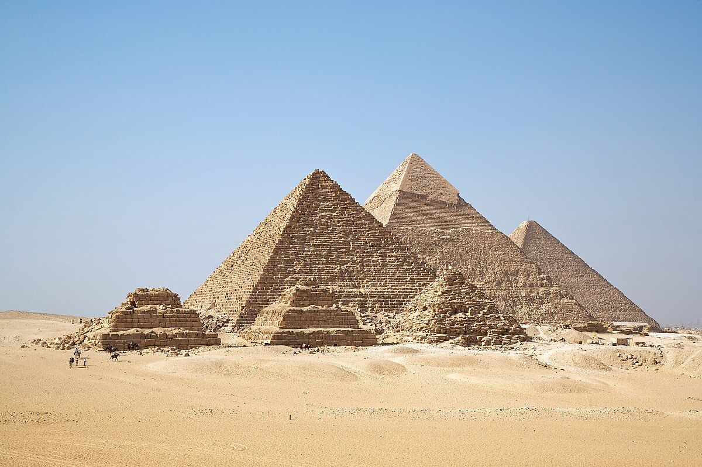
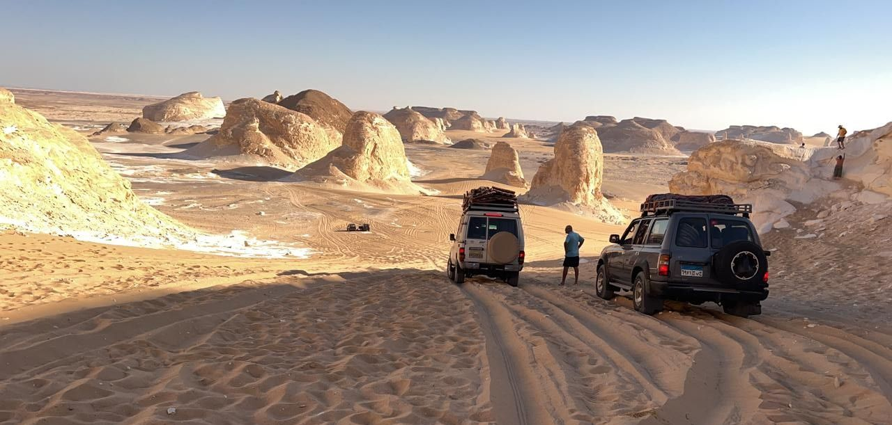
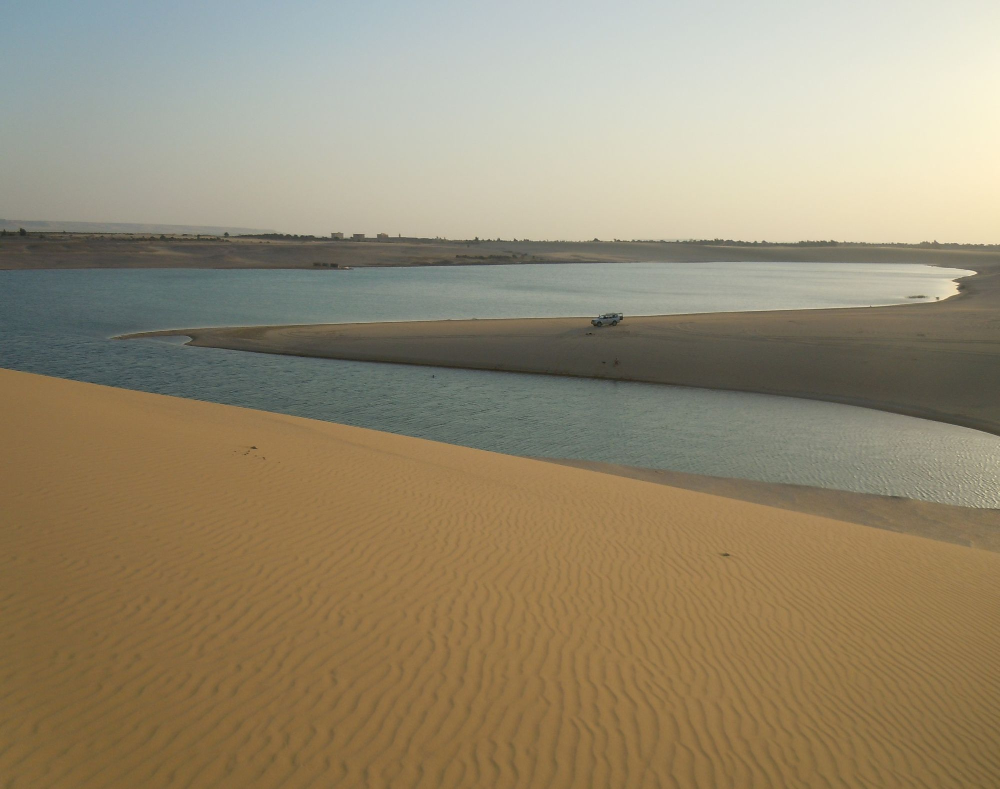

اليوم ٠١
الوصول إلى القاهرة
الاستقبال في المطار والانتقال إلى الفندق. المبيت في القاهرة.
القاهرةفندق

عبور صحراوي لمدة ١١ يومًا من القاهرة مرورًا بالبحرية والفرافرة والفيوم، مع التخييم تحت النجوم: الصحراء البيضاء وبحر الرمال الأعظم وكهف الجارة ووادي الحيتان وبحيرات الفيوم.
قد يتغير ترتيب الأيام بحسب الطقس والرمال والمجموعة، لكن جوهر المسار يبقى كما هو.
احجز هذا المسار
الاستقبال في المطار والانتقال إلى الفندق. المبيت في القاهرة.

أهرامات الجيزة وجبانة سقارة، ثم المتحف المصري الكبير الجديد وغداء. فترة ما بعد الظهر حرة وجولة سيرًا في المدينة. المبيت في القاهرة.

ميكروباص جنوبًا إلى الواحات البحرية، ثم غداء والانتقال إلى سيارات الدفع الرباعي في الحيز. الجبل الكريستالي، ثم دخول الصحراء البيضاء عبر ممر العقبات. خيام لشخصين.

الشروق وكثبان العقبات، ثم سباحة وشاي في بئر خضرة والتكوينات الصخرية. غداء في الجهة الغربية، والتخييم في وادٍ على حافة بحر الرمال الأعظم.
نحو كتلة أبو سعيد الجبلية، وغداء على الهضبة المطلة على أبو منقار، والمبيت في Sand Gate Camp.

جولة في الواحة، وغداء عند بئر محمود ١ وحمّام في العين الساخنة. المبيت في Sand Gate Camp.

الطريق إلى جبال شاو شاو، ثم غداء وزيارة كهف الجارة. التخييم على كثبان أبو محرّق.

يوم كامل بالدفع الرباعي عبر كثبان أبو محرّق من الجنوب إلى الشمال. التخييم قرب درب الريان.

مسارات حتى طريق الفيوم ووادي الحيتان بمتحفه الصغير وحفرياته. غداء ثم إلى وادي الريان، والمبيت في فندق بالفيوم.

جولة صباحية في وادي الريان وغداء على البحيرة، ثم ميكروباص إلى فندقك في القاهرة.

الإفطار والانتقال إلى مطار القاهرة.
صورة واضحة قبل أن تطلب عرض السعر. تعتمد الأسعار على حجم المجموعة والموسم.
تُؤكَّد الخدمات النهائية في عرض السعر الخاص بك.
ما الذي تتوقعه على أرض الواقع.
من أكتوبر إلى أبريل، حين تكون الأيام دافئة والليالي معتدلة البرودة. اسألنا عن الأشهر الأخرى.
للمسافرين ذوي الصحة العامة الجيدة. لا حاجة لمهارات تقنية: أيام طويلة بالدفع الرباعي ومخيمات بسيطة.
خيام لشخصين وحصائر نوم ومطبخ ميداني. أحضر طبقة دافئة للنوم ليلًا.
GPS وهواتف بالأقمار الصناعية في كل سيارة، وسائقون ومرشدون بدو ذوو خبرة.
الشروق والغروب بين الكثبان وسماء النجوم ليلًا. أحضر بطاريات احتياطية وحقيبة مقاومة للغبار.
أرسل لنا تواريخك وعدد المجموعة وسنرد بعرض سعر مخصص لك.
لا يوجد حجز آلي: نُعدّ كل رحلة خصيصًا لك. أخبرنا بالتواريخ وعدد المسافرين وطريقتك المفضلة في السفر، وسنرد عليك شخصيًا بالمواعيد المتاحة وعرض السعر.
مكتب الحجوزات من 08:00 إلى 20:00 بتوقيت مصر. تفضّل استمارة؟ انتقل إلى صفحة الاتصال
أو تابع جنوبًا: وديان الدباديب والقلاع الرومانية ومعبد هيبس والبجوات.